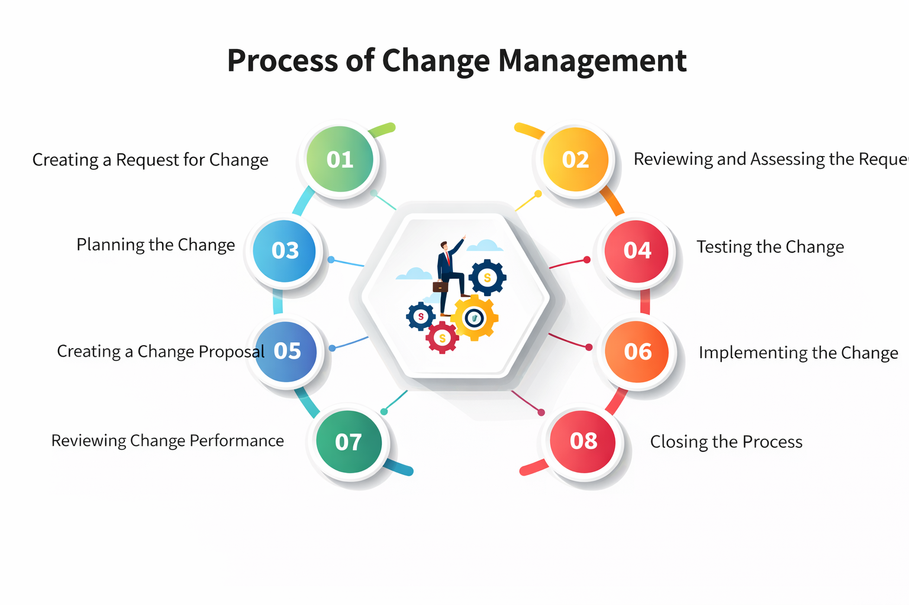

A minimal but complete change management plan fits on one page. Use this template:

Change Request → Evaluation → Approval → Implementation → Rollback Plan → Documentation
Image placeholder: Insert process flow diagram here| Section | Content |
|---|---|
| 1. Purpose | Why we manage changes (e.g., protect scope, quality, budget) |
| 2. Who can request a change | Anyone: customer, PO, team member, stakeholder |
| 3. How to request | Use the Change Request Form (see US-41) |
| 4. Evaluation process | Impact on scope, schedule, cost, risk, quality - always involve tech lead |
| 5. Approval authority | Product Owner (small/medium) / Change Control Board (large/high risk) |
| 6. Implementation workflow | Link to current Sprint or next Sprint |
| 7. Rollback plan | How to undo the change if it fails |
| 8. Documentation | Where change logs are kept (e.g., Jira, Confluence) |
"It is ok to tell the customer that you need to discuss/find out with the technical lead how much this change would affect budget, scope and schedule. Tell that you will get back to them as soon as possible."
"Do not promise the customer all the changes without analyzing first the effect of the change. If you need time to figure this out, tell it to the customer asap."
| Team Size | CAB Needed? | Who Approves? |
|---|---|---|
| Small (1-5 developers) | No | Product Owner + Tech Lead |
| Medium (5-15 developers) | Optional | Small CAB (PM, PO, Tech Lead) |
| Large (15+ developers) | Yes | Formal CAB with multiple stakeholders |
Association for Project Management. (n.d.). How to control change in a project.
Ominext. (n.d.). Complete guide to change management.
Project Manager Resources. (n.d.). What to do as a project manager? Practical tips from industry practice.